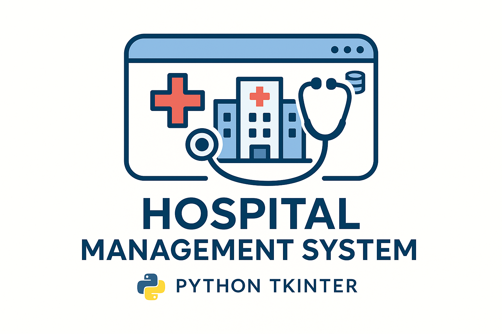
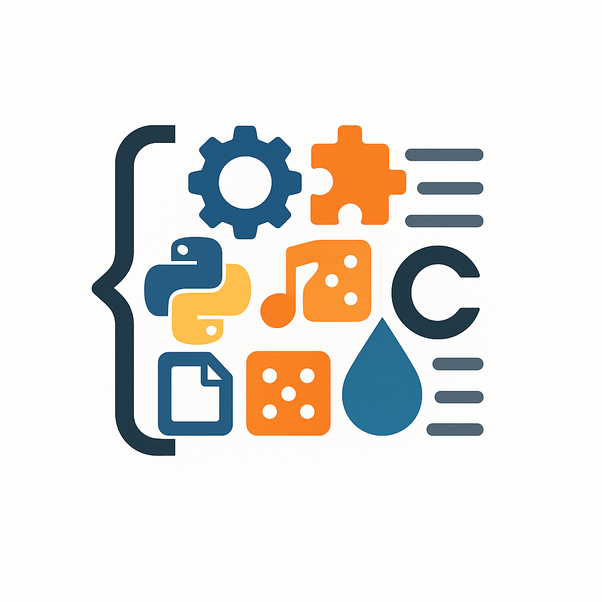

Work
Here are some projects in which i have woked with :

Parking Management System
The 'Parking Management System' is a sophisticated software solution designed to revolutionize
parking operations. Developed using Python's Tkinter library for GUI and integrated with a MySQL
database, this system offers a seamless and efficient way to manage parking facilities. Users can
effortlessly book parking slots, process payments securely, and register their vehicles for an
enhanced parking experience. With features like advanced booking, integrated payment gateways, and
user-friendly interfaces, the system ensures convenience and ease of use. Automatic email
notifications provide users with essential booking details and payment receipts, while advanced
security measures, including digital keys and real-time surveillance, ensure vehicle safety. Built
with scalability in mind, the system can be customized and expanded to meet evolving client needs,
making it a versatile solution for parking management.

Resturant Management System
This restaurant management system, developed using Tkinter, encompasses key functionalities such as
order processing and room reservation management for existing guests in the database. Although there
is potential to incorporate additional features such as integrating room details and menus into the
database, the primary emphasis has been on maintaining the entirety of the project within a single
file and managing code length, which exceeds 700 lines. Consequently, while the DRY (Don't Repeat
Yourself) principle hasn't been fully adhered to, and the code predominantly follows a procedural
paradigm. It is presumed that the requisite databases and tables have been pre-established for the
program's operation.

library Management System
This Library Management System, developed using Python's Tkinter library, provides a comprehensive
interface for managing a library's book inventory and user interactions. It includes features such
as adding new books, issuing books to members, editing book details, returning issued books,
deleting books from the inventory, displaying the list of all books, and searching for specific
books in the database. Additionally, the application offers a logout functionality to securely exit
the system. Each feature is accessible through clearly labeled buttons on the main interface,
ensuring ease of use for library staff.

Desktop assistant
It performs various tasks through voice commands, including opening applications, browsing the web,
sending emails, controlling media playback, and providing system information. The program supports
44 commands, making it useful for tasks like shutdown, sleep, adjusting brightness and volume, and
searching and playing YouTube videos. It employs the speech_recognition library for voice
recognition, the pyttsx3 library for text-to-speech, and features a Tkinter-based GUI for user
interaction. While currently limited in scope, It is an excellent project for beginners and can be
enhanced with additional APIs like OpenAI.
Banking management system
This is a simple banking system implemented in Python using the Tkinter module. It provides a
user-friendly interface for registering, logging in, depositing, and making payments. This project
serves as a foundational requirement for future projects that involve payment options, such as
restaurant management systems, parking management systems, etc.

Tkinter Messaging App
The Tkinter Messaging App is a straightforward messaging platform created using Tkinter, a Python
GUI toolkit. It facilitates user communication through features like registration, login, and
real-time chatting among registered users. New users can register by providing their email,
password, and username, with email serving as the primary identification key. Once logged in, users
can access their contacts and engage in real-time conversations, with chat history being loaded if
available. The application's design is simple and intuitive, ensuring easy navigation and usage.
It's worth noting that while the app provides basic messaging functionality, it may lack advanced
features commonly found in comprehensive messaging applications.

Hospital management system
This hospital management system, developed using Tkinter, encompasses key functionalities such as
appointment taking, granting and prescribing for existing patients in the database. Although there
is potential to incorporate additional features such as integrating medical records and treatment
details into the database, the primary emphasis has been on maintaining the entirety of the project
within a single file and managing code length, which exceeds 800 lines. Consequently, while the DRY
(Don't Repeat Yourself) principle hasn't been fully adhered to, and the code predominantly follows a
procedural paradigm. It is presumed that the requisite databases and tables have been
pre-established for the program's operation.

To-Do-Lists
The Django Todo List project is a web application developed using the Django framework, offering a
simple yet effective way to manage tasks and to-dos. Users can create, update, and delete tasks, as
well as mark them as complete. The application typically includes features like user authentication
and authorization to ensure task privacy and security. With Django's powerful features and
easy-to-use admin interface, building a Todo List becomes efficient and customizable to fit various
needs.

others
Various projects are available in the GitHub repository, covering a wide range of functionalities
and tools. These projects include a Student Registration System using Tkinter and Openpyxl modules,
enabling seamless management of student data. Additionally, an Online Audio Video Downloader
facilitates easy retrieval of multimedia content from online sources. For entertainment and
decision-making purposes, a Toss Simulator and Dice Simulator, built using Python Tkinter module,
provide interactive experiences. Furthermore, a Hydration Tracking System ensures users stay
hydrated by monitoring their water intake. Lastly, a Patients Registration System implemented in C
offers a comprehensive solution for managing patient records efficiently. These projects showcase
diverse applications of programming languages and modules, catering to different needs and
interests.